linux
9-21-2026
Fascinationating
table of contents
definition
distributions
=-- packaging compatibility
desktop environments
=-- what about... everything other than GNOME and Plasma?
application compatibility
should you use it?
If you would like to see the first and much worse version of this blog post, you can view it here.
You are viewing this webpage on an operating system. Statistically,
your operating system is, in descending order of market share, Android,
Microsoft Windows, iOS, macOS, or Linux.
Wait, "Linux?" That's peculiar.
What's a Linux?
definition
Linux is a free and open-source (FOSS) operating system kernel originally developed
by Linus Torvalds.
In a nutshell, a kernel is an operating system component that acts like the glue
between the processes (running applications) of an operating
system and the hardware it's running on. Since the original design of Linux,
it has grown exponentially with thousands of contributions
from volunteers to improve it, as it is FOSS, meaning anyone can view and contribute
towards the project.
Today it is used in servers, embedded systems, supercomputers, and...
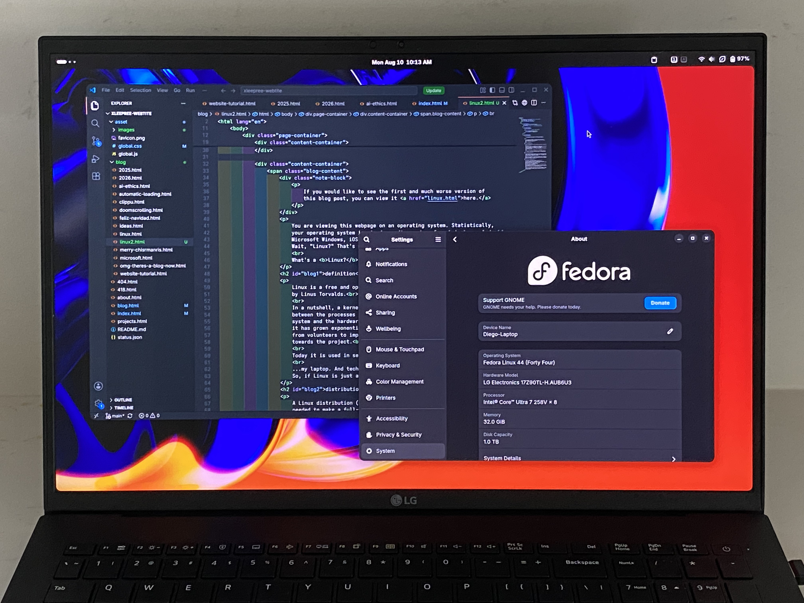
Say, my phone camera doesn't look as great as I thought it did
...my laptop. And technically your phone, if you own an Android phone.
So, if Linux is just a kernel, what software makes it an operating system?
distributions
A Linux distribution (distro) provides the rest of the components and applications needed to make a full-featured operating system for use in all kinds of use cases, like the previously mentioned servers, embedded systems, supercomputers, and, increasingly commonly, desktops like my own.
Today, there are hundreds of Linux distros, and they even come in families, with
many distros hailing from the original Red Hat Enterprise Linux (includes Fedora Linux),
Debian (includes Ubuntu), Arch Linux, and Slackware Linux distros. Many modern desktop
distros hail from Ubuntu, especially.
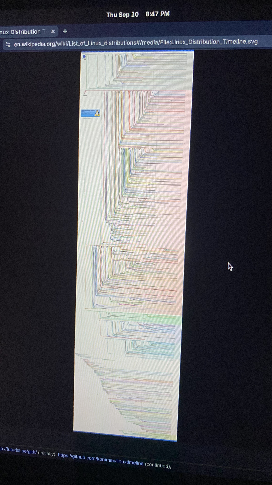
A timeline of Linux distros (By Andreas Lundqvist (initially), Muhammad Herdiansyah (continued), Fabio Loli (continued))
packaging compatibility
The Linux kernel can be enough to make sure, if a program runs
on one distro, it should work on others. But often,
this can be changed by the application management (packaging) system
and differing application versions of a distro compared to others. For example:
Debian uses the apt packaging system,
while Fedora Linux uses rpm,
while Arch Linux uses pacman,
and so on for many, many Linux distros. These all work differently and have
separate application repositories.
For a developer, this can turn what would otherwise be one target into far too many.
Sometimes, developers go out to provide downloadable archives for multiple of the
major Linux distros. But a newer solution exists today.
Containerized environments like Flatpak and Snap provide sandboxes for applications
to run in, reducing many targets to just one and increasing security for users.
Flatpak (paired with the Flathub application repository) is by far the
most popular option. However, it is subject to criticism because, as I just mentioned,
Flatpak is almost always paired with only Flathub, and I wouldn't say that's an
unfounded concern. Very few applications have their own repository for Flatpak.
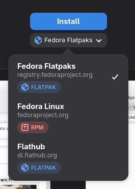
An app that has both the RPM and Flatpak packages
desktop environments
One of the most important components of a Linux distro is the desktop environment.
The desktop environment renders application windows and its user interface.
The most popular desktop environments in my experience are
GNOME Shell and
KDE Plasma. To sum up
what is actually different about them, GNOME is very uniform in its styling and UX,
but it can be customized heavily with GNOME Shell Extensions. Extensions can and
often break when GNOME changes version. Plasma is close to uniform styling, but not
quite there with its applications. However, Plasma is incredibly customizable on most
all fronts. In my experience, Plasma offers more amenities than GNOME.
I would say both are as good as the other and they have their pros and cons.
Personally, I use GNOME on my laptop.
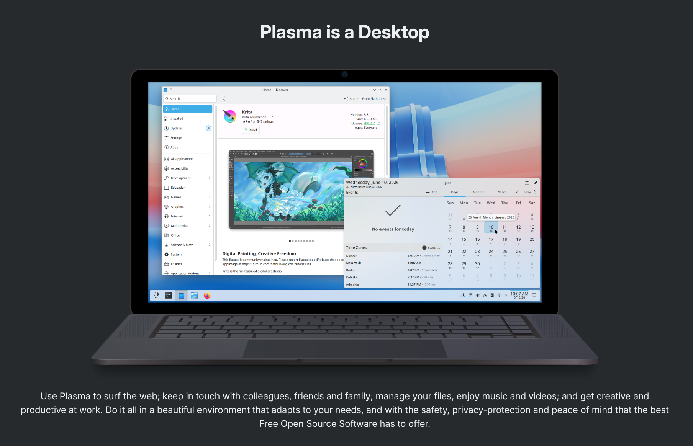
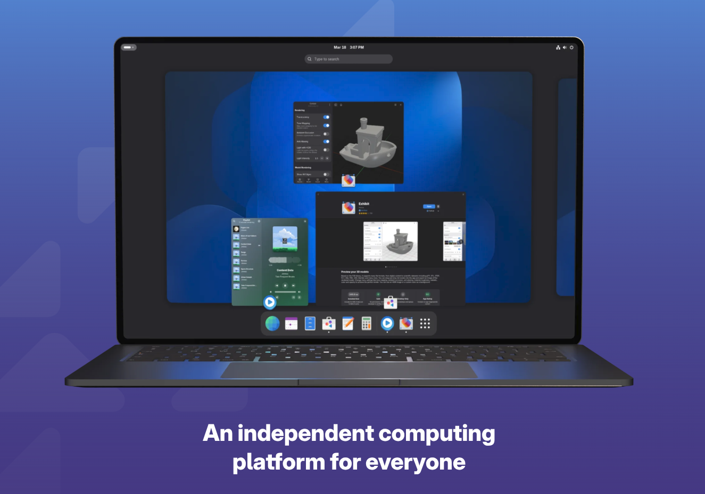
Plasma and GNOME on their websites
what about... everything other than GNOME and Plasma?
There's other desktop environments I'd like to talk about too. They may not be as feature-rich or consistent as GNOME and Plasma, but I have tried a few and they're worth mentioning.
elementary OS' Pantheon may be my favorite
desktop environment other than GNOME and Plasma. On the surface it looks like a macOS
clone, but really just... isn't. It's like if you mixed Apple's UI design with GNOME.
But that doesn't really matter.
It's really well done today and it's a delight to use. You really can't do much anything
to it outside of settings and tweaks, as it doesn't have any kind of extension
storefront. However, I never found myself wanting to do that ever.
I did use Pantheon for quite a long a time earlier this year, but I did end up trying
other stuff.
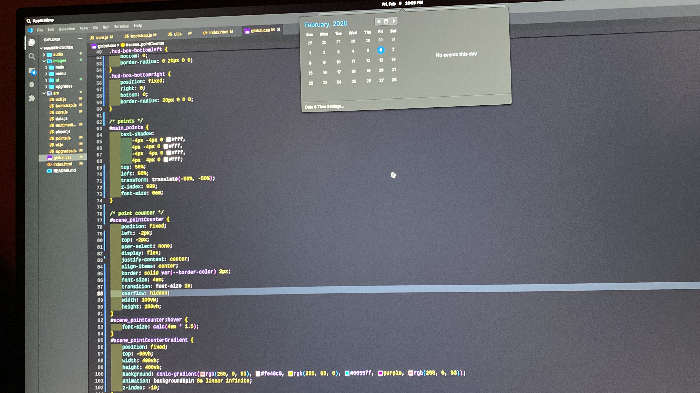
When I used elementary OS
Linux Mint's Cinnamon is also quite good. It isn't particularly
flashy or super polished, but it just feels familiar and reliable. Plus, one of its
big services is making GUI apps for stuff you would otherwise have to do in the
terminal, and that's much appreciated.
Its design is known for being much similar to Windows, making for an easy learning curve
to new users. However, it's also kind of old, and still only uses the X11 windowing system
reliably. So I can't even use it on my laptop if I wanted to. But otherwise, Mint's a good
choice for familiarity and ease of use.

I've never used Mint personally. It's on a family member's laptop though, which, let's admit it, would have been e-waste otherwise... Just take a good look at that TN panel, oh boy.
Budgie is kinda weird. I've looked around
in it before, and I've never gone far enough to daily drive it. Perhaps it's because
what I tried was Ubuntu Budgie, what Buddies of Budgie describes as a "highly curated
Budgie Desktop experience with Ubuntu at its core."
What I experienced does not seem to align with "simplicity," "minimalism,"
and "elegance." As I just mentioned, I haven't tried stock Budgie so that may be
exactly why. Aside from that, the form factor of Budgie is novel and it's got
potential.
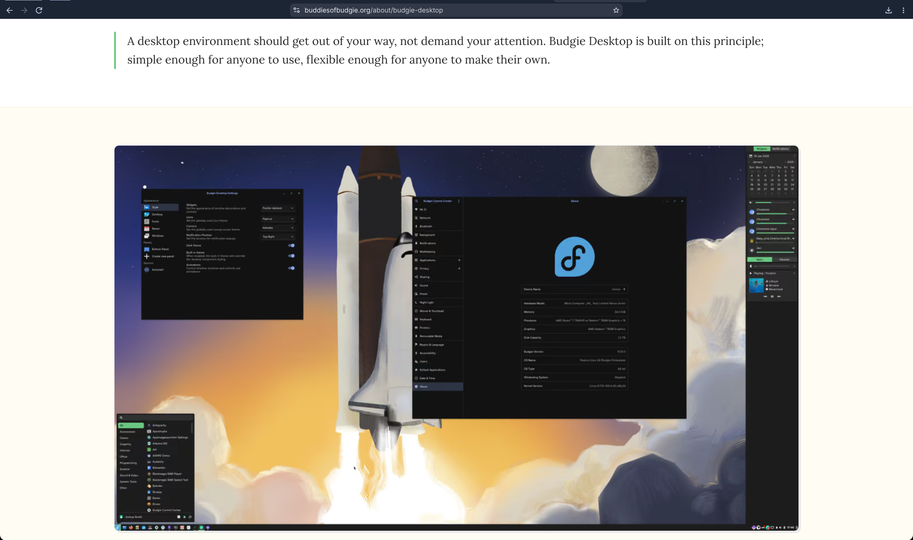
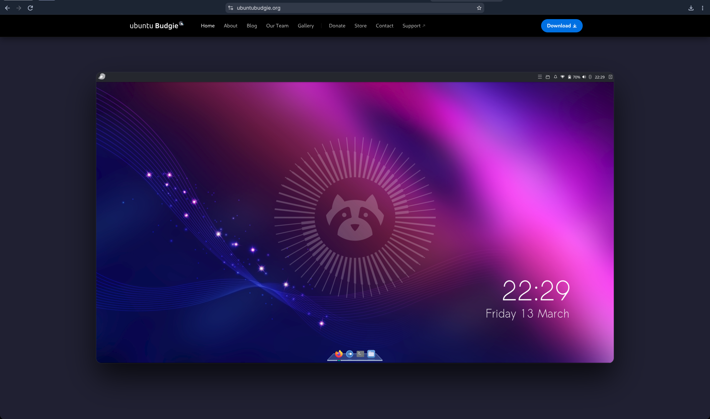
Stock Budgie vs. what I saw
application compatibility
Everything I use works on Linux. Valve's game translation layer,
Proton, is really
good at its job. And the rest of the stuff I use is just directly Linux compatible. Yay!
However, some stuff will just plain not work:
- Adobe anything
- Popular games with kernel-level anticheat like VALORANT, Fortnite, CoD, etc.
- Microsoft Office
If this is an immediate dealbreaker for you, I'm sorry. I can grant you two solutions that
may alleviate the problem.
The first solution for things like Adobe and Microsoft Office is to find alternatives.
Adobe's got several competitors, such as the DaVinci Resolve and Kdenlive video editors, and the Krita,
Affinity, and Inkscape apps for photo editing and illustration. They're all pretty good, but
in many ways one can just be too used to Adobe to switch.
I wouldn't know though, those subscriptions demand quite large sums.
For Microsoft Office, I would say the alternatives can be much more viable. LibreOffice is basically
where it's at. Is it better than Microsoft? I have no idea. But as far as I've used it, everything
just works. So use it! Say goodbye to easy online collaboration though. You'll have to find another way.
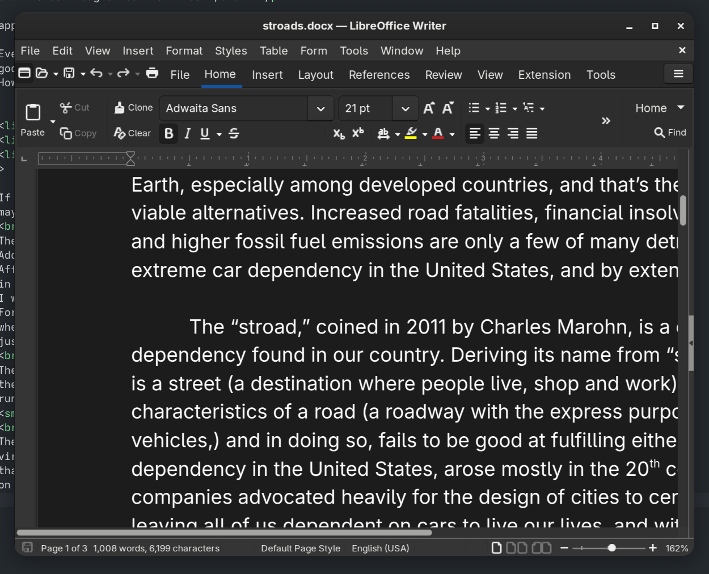
LibreOffice Writer.
The second solution is attempting translation with fermented grape juice. Also known as
the Wine translation layer. It's what Valve's Proton is based off of.
It can make Windows applications run on Linux (and macOS.) Beware that many big applications can just fail.
I wouldn't depend on it.
I hate the smell of wine... and beer. All the alcohol man, it's really just got a stench!
The last resort is just that you've gotta keep using Windows. You could run a GPU-accelerated
virtualization of Windows in Linux but, I'm really not sure if it's worth the monumental hassle
that it is. Most people, including me before, will just dual-boot, keeping both Windows and Linux
on the computer. It's not perfect but it can often make the most sense.
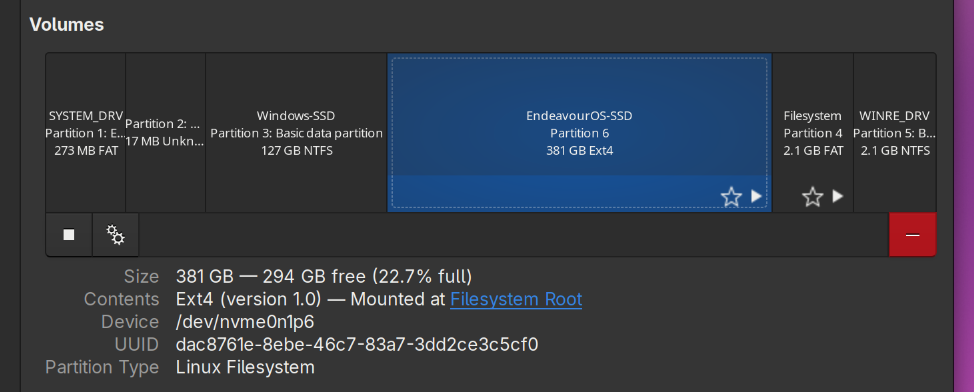
My drive from before. Look! It still had Michealsoft Binbows!
should you use it?
I use Fedora Workstation 44 because it's actually an operating system I'm fond
of and, along with that, I know it can improve fast, it'll run smoothly on my
computer, stay out of business, and perhaps important to you, not take any
steps to surveil me. And also because, frankly, I've forgotten how to use
Microsoft Windows and if I try it again I may grow too fed up with it.
So should you? It depends on your use case.
If the only purpose of your computer is to use a web browser and use
system utilites like document editors, calculators, etc., then absolutely.
If you're dependent on of proprietary Windows-only software or playing many
games with kernel-level anticheat, well... no, you shouldn't.
More than that, though, is if you just don't care. If you've got no gripes
with Windows and see no need to take this opportunity, it may just be
a waste of time, given your reason to explore is to switch to Linux.
On top of that, learning a whole new operating system and way to use your
computer takes time and troubleshooting. You will need to take
time out for that.
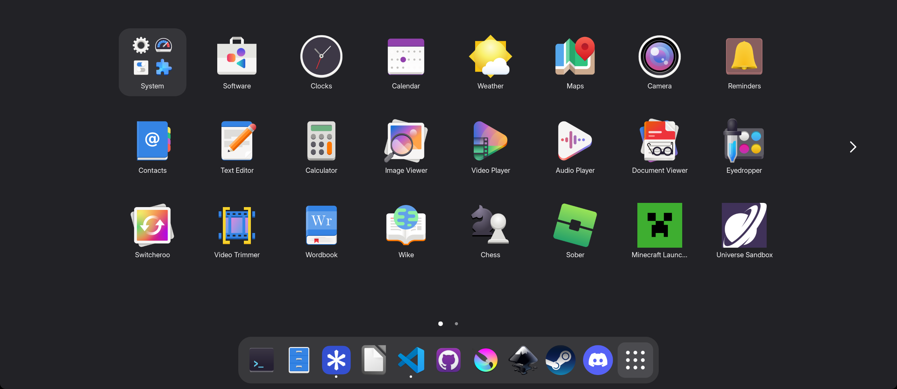
Apps I have installed on my laptop
Personally, however, Windows started to get on my nerves because of all the bullshit Microsoft wants to pull. So I've found my solution. Maybe you could too.